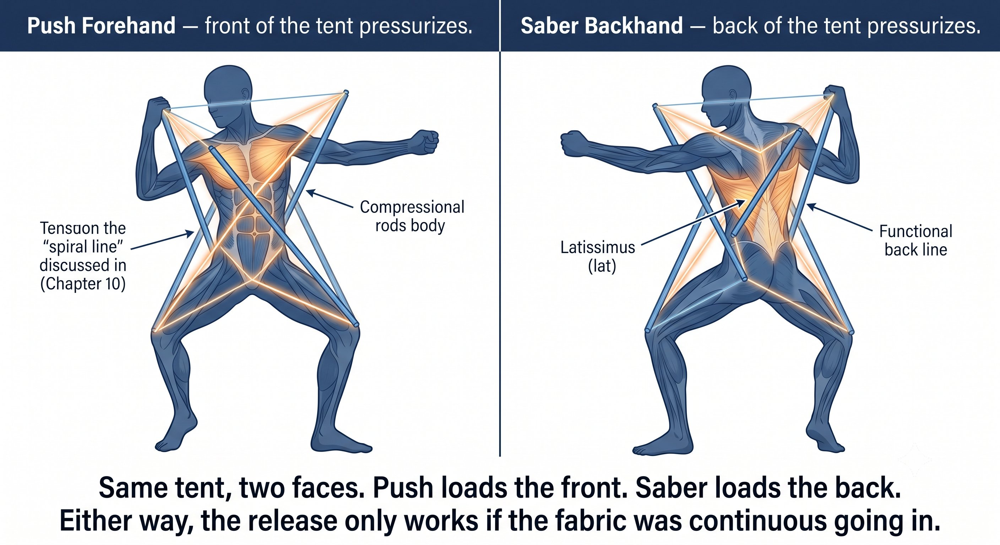
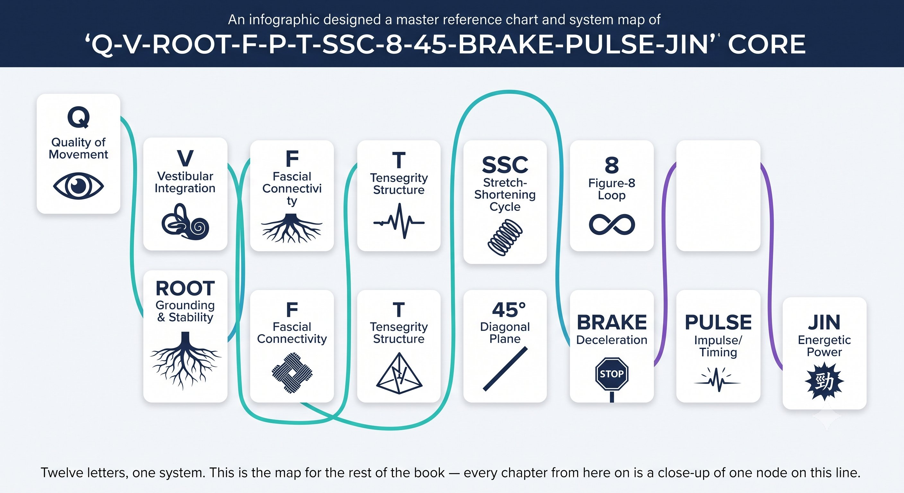

Chương 11: Tensegrity
(Bản dịch tiếng Việt của Chapter 11 trong Sổ Tay Quần Vợt Thống Nhất)
Nguyên Lý Cấu Trúc (T)
Cơ thể bạn không phải một chồng khối. Nó là một cái lều. Xương thì nổi. Fascia thì giữ.
Tensegrity nghĩa là căng (tension) cộng toàn vẹn (integrity). Đây là thuật ngữ của Buckminster Fuller cho một cấu trúc đứng vững nhờ độ căng liên tục, chứ không phải nhờ sự nén. Xương là những cây cột. Fascia là tấm vải và những sợi dây néo.
— Henry Phạm

Hình 11.1
Tensegrity Thực Sự Là Gì
Hình dung thông thường về cơ thể là các khúc xương chồng lên nhau, với cơ bắp di chuyển chúng qua lại.
Hình dung theo tensegrity thì khác: cơ thể bạn là một cái lều. Xương là những cây cột — chúng không bao giờ chạm vào nhau, chúng nổi. Fascia là tấm vải liên tục và những sợi dây néo giữ các cây cột đó đứng yên dưới một độ căng không đổi. Kéo một góc vải, cả cái lều sẽ đổi hình dạng.
Điều Này Trông Như Thế Nào Trên Sân
Khi bạn đạp chân sau và xoay người, bạn không hề "dùng cơ chân." Bạn đang làm tăng độ căng trên toàn bộ tấm vải của đường xoắn ốc, nén khung xương lại thành một chiếc lò xo đã được nạp lực.
– Một cẳng tay siết chặt sẽ phá vỡ tensegrity. Nó tạo ra một nút thắt căng cục bộ, khiến lực không thể truyền từ chân đến tay. Năng lượng rò rỉ ra ngoài, và cả cú đánh trở nên nặng nề.

Hình 11.2
– Một cái đầu ổn định giữ cho tensegrity cân bằng. Đầu là một cây cột nặng — khoảng 5kg. Nếu nó trôi dạt, cả cái lều fascia phải tự căng lại chỉ để giữ bạn khỏi ngã, và sự căng lại đó thể hiện ra thành sự siết chặt đột ngột ở cẳng tay — chính là phản xạ tiền đình-cột sống từ Chương 9. Một cái đầu bất động nghĩa là một cái lều ổn định, nghĩa là một cú bật tự do.
Vì Sao Hai Câu Lệnh Này Hiệu Quả
Cú push forehand tăng áp lực lên mặt trước của cái lều — đường xoắn ốc — rồi để nó bật ra. Cú saber backhand tăng áp lực lên mặt sau của cái lều — đường lưng chức năng cộng lưng xô — rồi để nó bật ra.
Nguyên Lý Cốt Lõi
Tensegrity không phải là giải phẫu học. Đó là nguyên lý cấu trúc cho phép fascia truyền lực từ chân đến tay mà không rò rỉ dọc đường đi.
Tensegrity Trong Vòng Lặp CORE
Tensegrity là chữ T trong Q-V-ROOT-8-45-Impulse-Kình CORE — nguyên lý cấu trúc làm cho mọi thứ khác trong chuỗi đó trở nên khả thi.
Quy Tắc
Tensegrity là logic cấu trúc nằm dưới mọi thứ. Nếu nó gãy — cẳng tay siết chặt, đầu di chuyển, vòm chân sụp — lực sẽ rò rỉ, và kình không còn cách nào để biểu hiện ra ngoài.
Danh Sách Kiểm Tra Tensegrity
XƯƠNG NỔI. FASCIA GIỮ. ĐỘ CĂNG LIÊN TỤC. KHÔNG CÓ NÚT THẮT.
– Bàn chân: tripod hoạt động, vòm chân nâng lên — các cột nền ổn định.

Hình 11.3
– Đầu: bất động, cằm gập — cây cột nặng giữ ở giữa, cái lều cân bằng.
– Cẳng tay: lỏng ở mức 3/10 — không có nút thắt cục bộ, tấm vải liên tục.
– Vung nạp: độ căng liên tục — không có chỗ nào chùng trong tấm vải.
– Không dừng ở đỉnh — dừng lại sẽ khiến năng lượng đàn hồi tiêu tán thành nhiệt chỉ trong khoảng một giây.
– Phanh: chân trước và hông dừng thật đột ngột — tấm vải nén lại thành một xung lực.
– Xung: một cú giải phóng 1-inch truyền qua tấm vải liên tục — cú giải phóng đó chính là kình.

Hình 11.4
– Nếu cẳng tay nóng rát, đó là một nút thắt trong tấm vải. Nếu khuỷu tay đau, đó là một chỗ gãy trong đường truyền.
Chương Này Dẫn Đến Đâu
Chương này thiết lập T — tensegrity — như biến số trong hệ thống Q-V-ROOT-8-45-Impulse-Kình CORE. Chương 12 bao quát chu kỳ căng-rút như động cơ vận hành. Chương 13 bao quát hình số 8 như bộ điều tiết. Chương 14 bao quát mặt phẳng vung 45 độ như điểm ngọt. Chương 15 bao quát cú phanh và cú xung như sự giải phóng. Chương 16 bao quát kình như kết quả mà tất cả những điều này tạo ra.